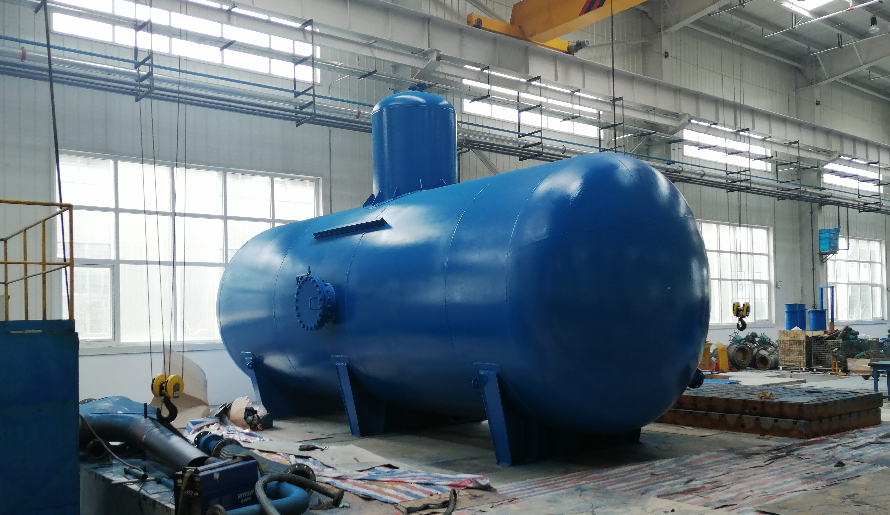

A custom-built distillation system for a distillery customer in Heilongjiang
📍 Customer: Distillery in Heilongjiang, China

Distillation is a thermodynamic separation process. It exploits the different boiling points of the components in a liquid or liquid-solid mixture: the low-boiling fractions are vaporised and then condensed to separate the whole mixture. It is essentially a combination of two unit operations — evaporation and condensation.
Compared with other separation methods such as extraction or fractional crystallisation, distillation has one clear advantage: it does not require any solvent outside the components already in the system. That means the process introduces no new impurities into the product. For a beverage producer, that is not a minor detail — it removes an entire class of contamination risk from the finished spirit.
The customer, a distillery in Heilongjiang, needed a system that could deliver a higher concentration of alcohol than their existing setup, while keeping the product path free of added solvents.
We designed and built a distillation system specifically for this customer. The whole assembly uses food grade stainless steel components, finished to a mirror polish.
Both choices were deliberate. Food grade stainless steel means every wetted surface is a material approved for contact with food and beverage, which is what a spirits producer needs for its documentation and for customer confidence. The mirror polish serves a practical purpose beyond appearance: a smoother surface has fewer microscopic crevices for residue to lodge in, which makes cleaning between runs faster and more complete — a real benefit in a batch process that has to be turned around repeatedly.
The system was configured to reach a higher ethanol concentration than the customer's previous arrangement, using distillation alone and without introducing any additional solvent into the system.
| Parameter | Specification |
|---|---|
| — | Entire wetted assembly in food grade stainless steel |
| — | Mirror-polished internal surfaces for cleanability |
| — | Solvent-free separation — no solvent added outside the system components |
| — | Configured to achieve higher ethanol concentration |
| — | Batch-oriented design for repeated turnaround |
| — | Custom engineered to the customer's process |
| Metric | Outcome |
|---|---|
| Operational Status | Running successfully, Higher ethanol concentration achieved |
| Customer Satisfaction | Reported no unplanned downtime related to this system |
| Warranty | 12 months from commissioning |
Higher ethanol concentration achieved. Cleaning time between batches reduced due to mirror finish. Solvent-free process — no new impurities introduced.